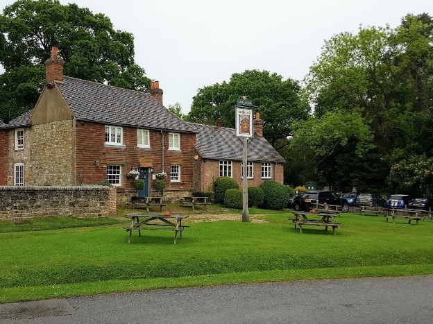
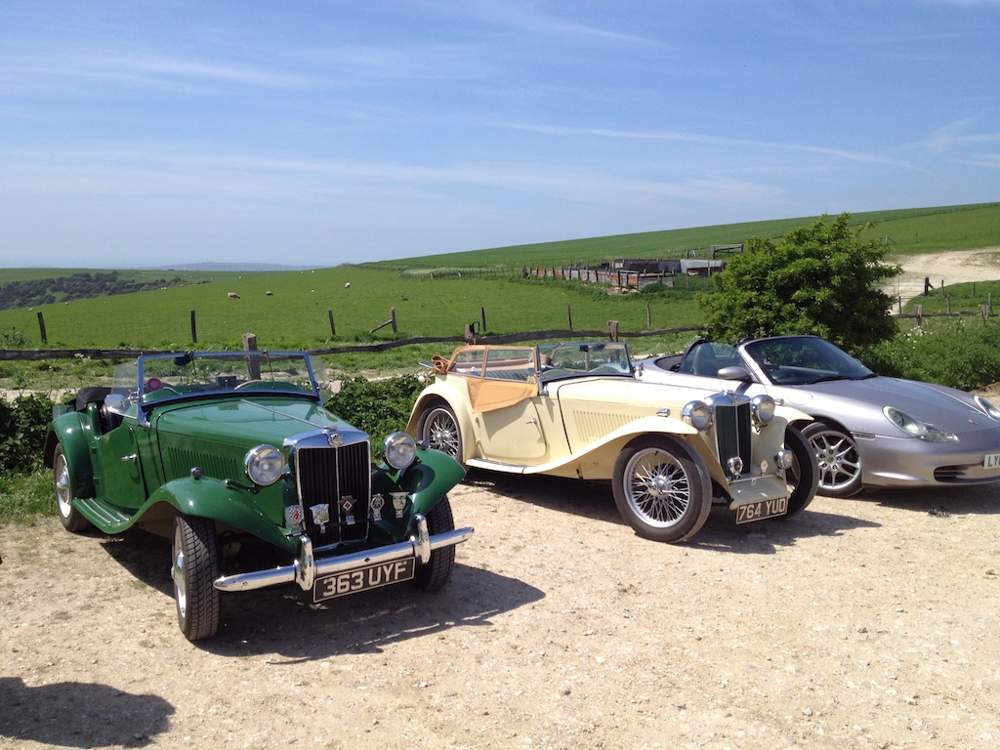
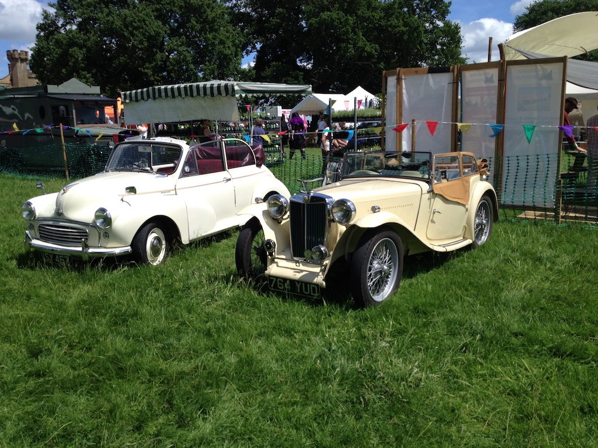
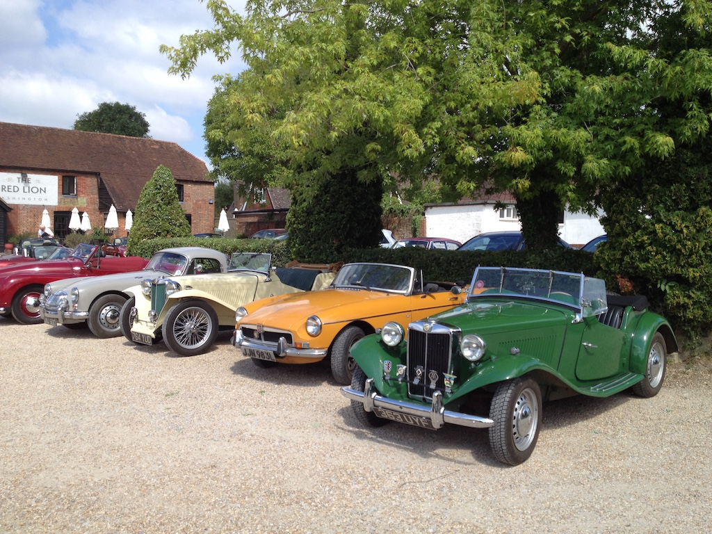
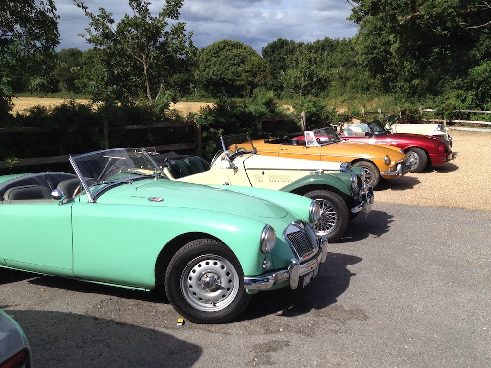
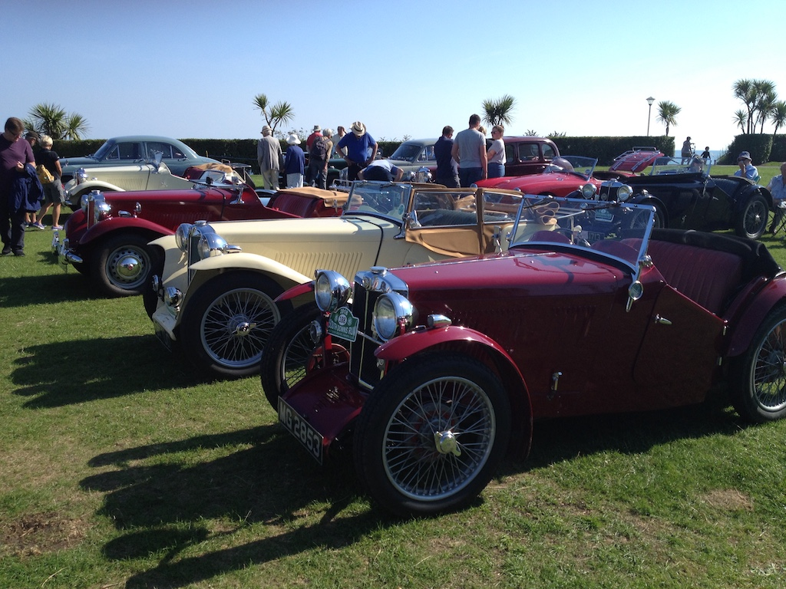
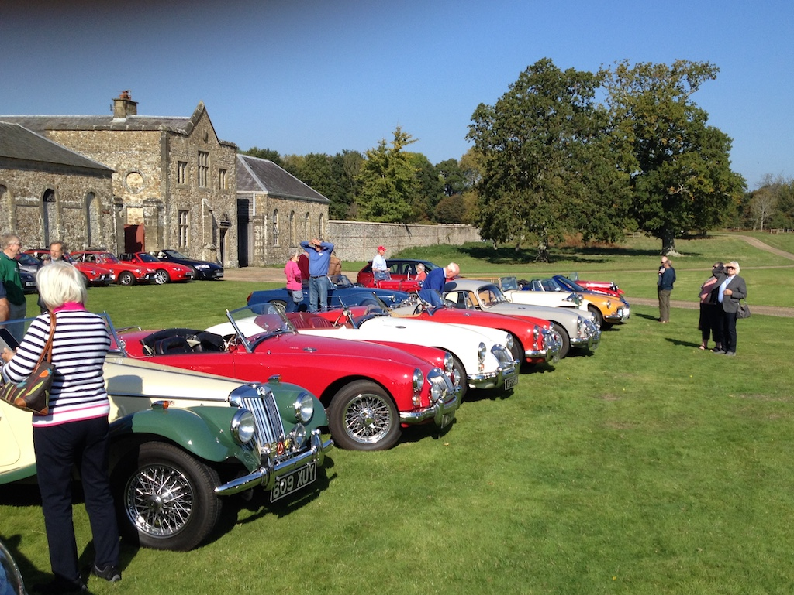
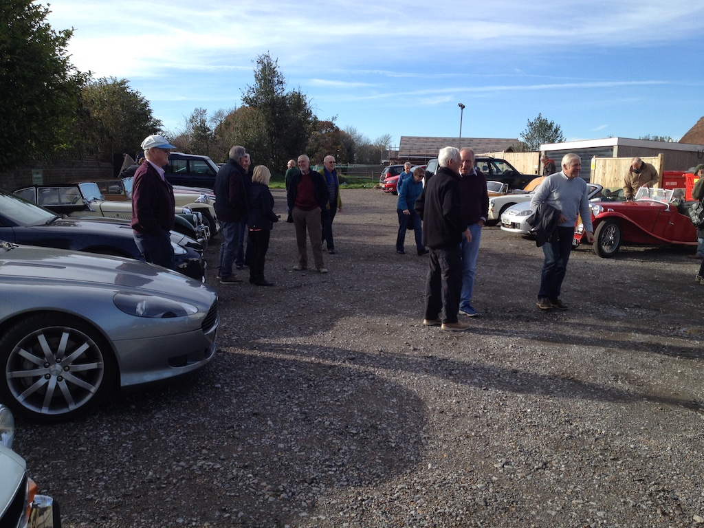

TC4985 Outings - 2018
Sussex Wanderers April, West Chiltington to Cranleigh
Not only was this the first outing of the Sussex Wanderers this year, it was the first substantial run of TC4985 since the work on the rear axle. It also happened to be one of the few dry and relatively warm days so far, even if the ground was rather wet and muddy.
There was a good turn-out, including a triple M and an older MG that I didn't recognise (possibly a PA), a TD and a couple of TAs. It was said that there were 53 people at lunch. We met at the Roundabout Hotel at West Chiltington for coffee and cake before setting off in a northerly direction. Once again I had to follow someone with a navigator, in this case a Lotus Elise (the engine of his TC is still in bits). The roads seemed to get wetter the further north we went. However, we arrived at the Park Hatch in Cranleigh. Lunch was reasonable, even if it did take a while to arrive.
The round trip was a total of 65 miles, the run itself being about 28.
WSMGOC Treasure Hunt - April, Lurgashall
This outing was basically a drive to Lurgashall, just north of Petworth, park the car, roam around the village trying to answer questions on the sheet and then have lunch in the Noah's Ark pub. Lurgashall is a pretty village built around a huge village green on which they play cricket (and were playing on this Saturday afternoon). It wasn't a very warm day and we didn't win the treasure hunt. However, we drove a total of 54 miles, mainly in the dry, and had a good day out.
Sussex Wanderers - May, Ditchling to Firle
This run was entirely within East Sussex, although to get to Ditchling I took one of the most pleasant routes in West Sussex, along the back of the Downs, through Fulking and Poynings. We met at the Notcutts garden centre for coffee and then set off, with me following a TD and a Porsche Boxter following me. It was a pleasant route through the East Sussex countryside, culminating in a run up Bo Peep Lane, the latter part of which is the old Firle hill climb (last used as such in 1967). The photo was taken in the car park at the top, before returning to the bottom for lunch at a pub in Firle. Overall today I drove the TC 69 miles.
Knepp Castle June, Floral Fringe Fair
Each year, Knepp Castle, a private estate just north of Dial Post, holds a Floral Fringe Fair. There is some entertainment and lots of stalls selling local food and crafts. Also, you can get in cheaper if you arrive in a classic car. The local radio report said that there were over 100 classic cars at the event, all of whom have a special parking area near the entrance. When I took this photo our neighbours had already left.
Although the run was only a total of 24 miles, this run was unusual because Angela was keen to go to the fair and so came along in the TC. It was a fine, sunny, warm day, so we bought some lunch and had a picnic looking out over the lake. Our folding chairs fit well behind the seats of the TC.
Sussex Wanderers June, Slindon to Charlton
A dry and sunny day. We met at the Spur pub on the A29 at Slindon and then set off through Slindon village. I was following an MMM, but lost them fairly quickly (they turned left and waited, but I drove past). I then navigated myself for a while until another MG came along and I followed them.
This was the first major run since I changed the seals on the rear, near-side brake slave cylinder. I'd been for a 22 mile run a couple of days beforehand, to the WSMGOC meeting at West Chiltington, and had checked for leaks after that. Today's run was about 20 miles to get to the Spur, then a 28 mile run and a little over 30 miles home. The total outing was 79 miles.
Sussex Wanderers July, Ashington to Maplehurst
A good turn-out of MGs, including a 1931 14/40 and a Jowett and an Austin 7! On a fine day I set off from the Red Lion at Ashington following a green TC (who drove very slowly), with a yellow MGB following me. Unfortunately the road we were travelling down was closed by BT, so we all had to turn around and take the more direct route along the A272 to the Maplehurst turn. We parked in the field behind the White Horse and sat in a large gazebo to have our barbeque. There were over 50 people. I returned via Partridge Green, doing 45 miles in all. A good day. Here is just a few of the cars on the run.
Sussex Wanderers August, Petworth to Midhurst
Another good turn-out of MGs, including a J2 and an Austin A40 Somerset! It was a bright, but slightly cloudy day, although it was just warm enough to be in shirtsleeves with the side screens off. We started with very expensive coffee at The Welldiggers Arms just outside Petworth. I was following the green TC again, with another green T-series following me. Soon, however, there were lots of MGs following us. Then we met a road closure with a very long diversion down a very narrow lane with lots of ups and downs. On one of the ups the car in front stopped to change down into first gear. I had to do the same, but had trouble getting going again. In the end I just managed to crawl to the top of the hill! Very worrying. The TC seemed fine after that, but it suggests that the engine is not producing enough power. The other two cars in our trio pulled into another pub just outside Midhurst (there were limited numbers at the route's destination), so I went on another few hundred yards to join the rest. The photo shows some of the cars assembled at the Welldiggers and we did a total of 72 miles.
South Downs Run
We had missed latest years run, simply helping to marshal at Whiteways Lodge car park. However, this year we set off at 7:35 in the TC and drove to Whiteways to help set up for the start of the Run and then to marshal. Our plate was number 3, implying only to older cars in the run. However, a late entry was also older. Ours was the only TC. We left at 10:30, had to turn around twice not far from the start, stopped for coffee at the Castle Hotel in Bramber and arrived at the Western Lawns in Eastbourne at about two o'clock. We had lunch on the promenade, bought an ice cream and briefly walked around the cars. Then we took the more direct route home along the sea front, through Newhaven and Brighton, leaving at a quarter to four and arriving home at 5:15 after a total of 136 miles. The TC ran quite well, but mis-fired when I started it up to put it in the garage! However, it was a warm, sunny day with not a cloud in the sky and light winds. At Eastbourne people were swimming in the sea. Needless to say we were very tired by the time we got home. The photo shows some of the pre-1956 MGs at the western end of the lawns.
Sussex Wanderers October, Parham House
The forecast was for a warm, sunny day and, as you can see from the photo, it was all of that. We started at Parham House, just the other side of Storrington, for coffee in the Big Kitchen. Then we did a slightly shorter run than usual, only just over 20 miles, and arrived back at Parham House for lunch. There was a good selection of cars, including an 18/8, a J2 and a triple-M. Overall I drove the TC 42 miles.
Sussex Wanderers November, Goddards Green to Scaynes Hill
I left home just before ten in the TC and drove to the Sportsman pub at Goddards Green (about 12 miles) to meet up with the Sussex Wanderers. I then followed a red MGF on the run to The Farmers Inn at Scaynes Hill, about 23 miles. Being November, the route had been chosen to be, in the main, on larger and less muddy roads. This photo is in the Farmer's car park. After a good lunch I returned home along the A272 and then down through Henfield, a total of 63 miles. The TC ran well, although there was a smell of petrol all the way home, where I reached at three o'clock.
Return to MG TC4985